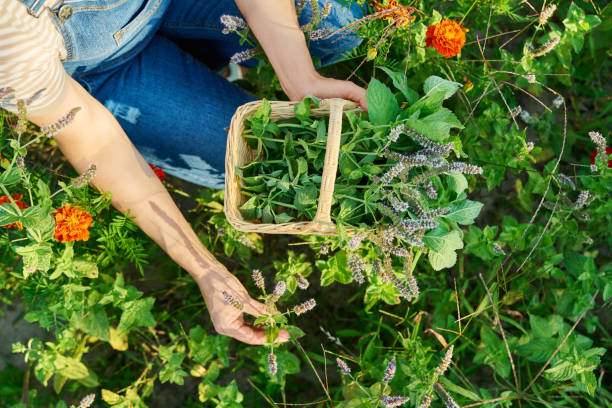
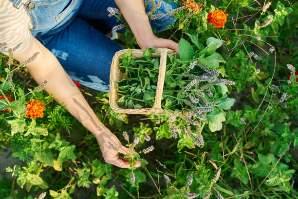

Herbs

Herbs
Nature's Gift for Wellness and Vitality
 

What Are Herbs?
For centuries, herbs have been revered for their healing properties, aromatic flavors, and natural goodness. At GUMZ, we are committed to bringing you the finest selection of organic herbs, carefully sourced and processed to ensure maximum purity, potency, and freshness. Whether you're looking for traditional remedies, culinary enhancements, or holistic wellness solutions, our wide range of dried and powdered herbs caters to your needs.
Why Choose GUMZ Herbs?
- 100% Pure & Organic - We believe in delivering herbs in their most natural form, free from synthetic additives, pesticides, and artificial preservatives. Every herb is carefully selected from trusted farms and undergoes minimal processing to retain its essential nutrients and medicinal properties.
- Rich in Nutrients & Healing Compounds - Our herbs are loaded with antioxidants, vitamins, minerals, and bioactive compounds that support various aspects of health, from boosting immunity and digestion to reducing stress and inflammation.
- Versatile Uses - GUMZ herbs can be used in herbal teas, dietary supplements, skincare formulations, and home remedies. They also serve as powerful culinary ingredients, adding depth and aroma to your favorite dishes.
- Sustainably Sourced & Ethically Produced - We prioritize sustainability by working with ethical farmers who practice eco-friendly harvesting methods. Our goal is to ensure that every herb you receive is not only beneficial for you but also for the environment.
Discover the Power of Nature’s Best Herbs
At GUMZ, we offer a diverse selection of handpicked herbs renowned for their therapeutic properties and traditional uses. Some of our best-selling herbs include:
- Turmeric – A golden spice with powerful anti-inflammatory and antioxidant benefits.
- Moringa – A nutrient-dense superfood known as the "miracle tree" for its rich vitamin and mineral content.
- Ashwagandha – A renowned adaptogen that helps combat stress, anxiety, and fatigue.
- Tulsi (Holy Basil) – A sacred herb valued for its immune-boosting and respiratory benefits.
- Ginger – A warming spice that aids digestion, relieves nausea, and supports overall gut health.
- Fenugreek – A natural herb that supports metabolism, hormonal balance, and lactation.
GUMZ – Your Trusted Source for Premium Herbal Goodness
Our mission is to revive the ancient wisdom of herbal healing while making it accessible for modern lifestyles. Whether you are a health enthusiast, a culinary expert, or someone exploring the benefits of herbal remedies, GUMZ is here to provide the highest quality herbs to enrich your life naturally.
Start your journey to holistic wellness and natural healing with GUMZ Herbs today! 🌿